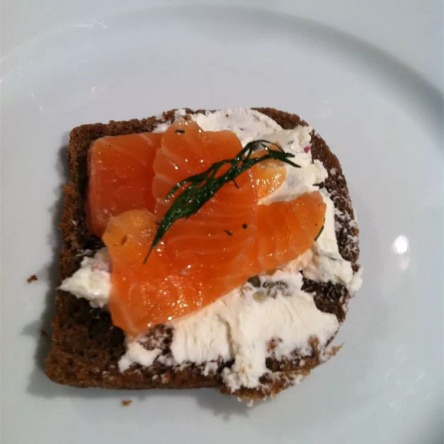

Back to Home
Gravlox
Gravlox is a popular item in Scandinavian Cuisine. Some, like this one, are made with vodka.
Ingredients
- 2 pounds salmon fillet, bones removed
- 4 tablespoons coarse sea salt
- 3 tablespoons light brown sugar
- 1 tablespoon pepper
- 1 bunch fresh dill, chopped
- 3 tablespoons vodka
Directions
- Drape plastic wrap over a glass baking dish. Cut salmon in half lengthwise, and place one half in dish, skin side down. Mix together salt, brown sugar and pepper. Sprinkle half of mixture over salmon in the dish, cover with the chopped dill, and pour the vodka over the whole mixture.
- Sprinkle the remaining salt mixture over the remaining half of salmon. Place over the salmon in the dish, skin side up. Fold the plastic wrap snuggly over the entire salmon. Place a board over the fish and weigh it down with a heavy object.
- Refrigerate fish for 24 to 36 hours, turning every 12 hours. To serve, separate the filets, and carefully brush off the salt, sugar and dill. Cut into very thin slices with a sharp knife.